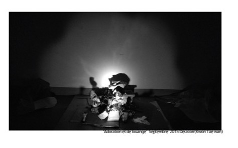

Où est le sage ? où est le scribe ? où est le disputeur de ce siècle ?
Dieu n'a-t-il pas convaincu de folie la sagesse du monde ?
지혜 있는 자가 어디 있느냐. 선비가 어디 있느냐. 이 세대에 변론가가 어디 있느냐.
하나님께서 이 세상의 지혜를 미련하게 하신 것이 아니냐.— 고린도전서 1장 20절
2학년 중간과제. 자화상입니다.